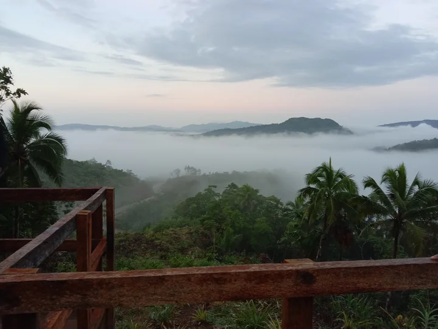
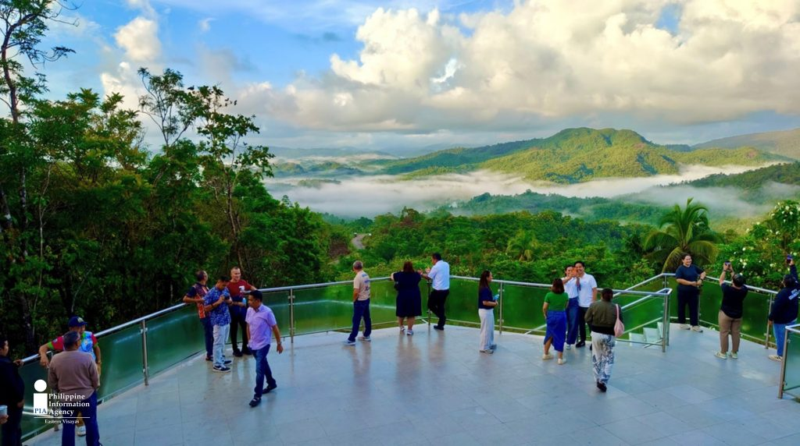

Hebacong Sea of Clouds


A breathtaking upland destination where the morning
clouds float
like a sea.
- Description of the place
- Hebacong Sea of Clouds is an eco-tourism site in Barangay Hebacong,
Borongan City, Eastern Samar. It is known for its scenic mountain views
and the stunning cloud formations that appear especially at dawn. The
place also features viewing decks and visitor facilities for tourists.
- Why it's Popular
- It is popular because visitors can enjoy a beautiful “sea of clouds” view,
especially in the early morning. Many people also visit because it is a
relaxing nature spot, easy to appreciate, and a rising tourist attraction in
Eastern Samar.
- Description of the place
- What makes Hebacong Sea of Clouds special is its natural cloud scenery
that makes the mountains look like floating islands. It also stands out as
an eco-tourism site that promotes nature appreciation and community
development.